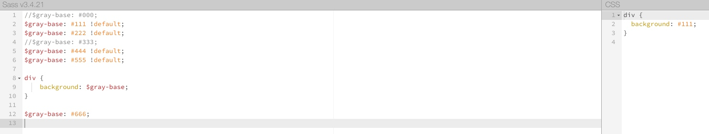

less 和 sass 中关于变量声明顺序的处理差别
sass doc:
http://sass-lang.com/documentation/file.SASS_REFERENCE.html#variable_defaults_default

bs doc:
https://github.com/twbs/bootstrap-sass#usage
issue:
https://github.com/less/less.js/issues/1706
参考:

另外关于 !default 的奇怪的变量声明覆盖方式:


使用的 sass less 在线编译器:
https://www.sassmeister.com/
http://tool.oschina.net/less
iOS Universal Links 配置流程
- 创建一个 apple-app-site-association 文件(JSON), 配置具体某个 App 可以 handle 哪些 url 示例: { "applinks": { "apps": [], "details": [ { "appID": "applinks:2HHW7J2HF4.com.diqiugang.2c", "paths": [ "*"] } ] } }
- 上传文件到一个 https 的 web server 上, 可以放在根目录 / 或者 .well-known 文件夹下
- 设置app 处理 universal links 1) 设置 com.apple.developer.associated-domains 字段, 添加一个需要 Universal links 处理的域名列表. To do this in Xcode, open the Associated Domains section in the Capabilities tab and add an entry for each domain that your app supports, prefixed with applinks:, such as applinks:www.mywebsite.com. Limit this list to no more than about 20 to 30 domains. 2)
从iOS 9.3开始, 只支持和当前页面不同域情况下打开App
Copyright © 2015 Powered by MWeb, Theme used GitHub CSS.